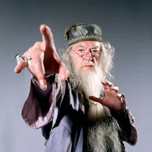

Primer Miembro
Dumberldore
Dumbledor es conocido como el Ranger Rojo original desde la primera temporada de la franquicia, Mighty Morphin Power Rangers, así como el líder del primer equipo de Power Rangers.
Dumbledor es conocido como el Ranger Rojo original desde la primera temporada de la franquicia, Mighty Morphin Power Rangers, así como el líder del primer equipo de Power Rangers.
Gandalf es un Pokémon de tipo eléctrico introducido en la primera generación. Es el Pokémon más conocido de la historia, mayormente por ser el acompañante del protagonista del anime, Ash Ketchum y la mascota representante de la franquicia Pokémon..